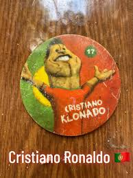
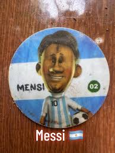
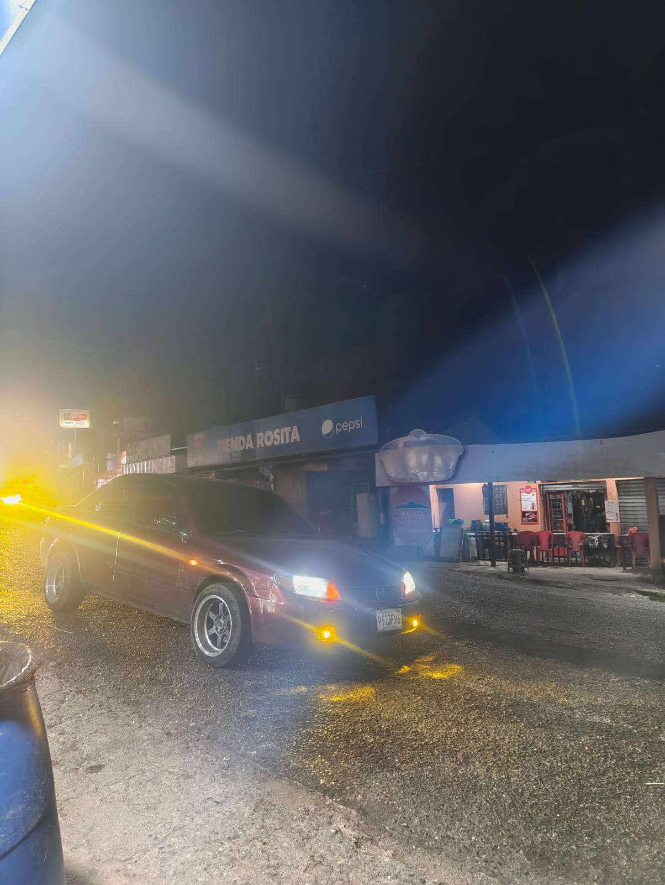

Hablemos un poco de mis Hobbies y actividades que realizo en algunas ocasiones, soy una persona la cual le gustan las actividades al aire libre , como lo es jugar futbol y algunas veces el basquetbol, pero este ultimo siendo ya lo ultimo que haría.
Desde pequeño eh sido apasionado al futbol, me recuerdo que en el año 2010 mis papas me inscribieron a por decirlo asi a talleres o cursos, uno casualmente 1 era de futbol, cada sábado mi mamá me llevaba a recibir ese curso, era feliz cada que iba. Como recuerdo tengo aquel mundial de Sudafrica 2010, aunque no tenia ni idea de que eras muchas cosas, el ver patear una pelota es algo que siempre eh disfrutado ver, además de que el ambiente era distinto, agregando cosas o recuerdos iguales, algo que comúnmente hacia era ver los partidos del FC BARCELONA junto con mi papá, el equipo que siempre eh apoyado y el cual a pesar de todo no eh dejado de ser un aficionado mas, cuando me mude a Santa Cruz Verapaz, se me fue dificil participar en cosas relacionadas al futbol, si no fue hasta 2013-2014 que empezaba a jugar mas con mis compañeros de ese tiempo, al principio empecé como portero , poco a poco me adentre mas al campo, siendo un buen defensa, pasando de nuevo otro mundial el cual fue Brasil 2014, en esa época recuerdo mucho los tazos con los jugadores de ciertas selecciones, como lo son estos:


En los años de basico, con los compañeros de cursos nos organizabamos para salir a jugar cada viernes a las canchas sinteticas, esto hasta que todos salimos de 3ero basico, en 4to bachillerato y 5to bachillerato por temas de la pandemia, no tuvimos muchas salidas con esos compañeros y deje de jugar de nuevo por casi 2 años, despues de ese lapso con un excompañero organizamos salidas a la sintetica los dias lunes en la noche, tipo 8,9 de la noche, pagabamos 2 horas para jugar y lo haciamos al tipico "sacarrin", sin dudar empezamos sin entendernos , perdiamos cada que jugabamos , hasta que encontramos esa conexion y ganabamos contra varios, hasta que yo tuve que dejar de participar porque me vine a trabajar a la capital, y de ahi hasta aca con los compañeros de trabajo que en ocasiones en las cuales hay personal y estamos completos organizamos algunas salidas a la sintetica, mejorando mucho gracias a lo movido que es el trabajo.
Manejar solo Sin duda cuando viajo a mi casa, el manejar es la actividad que mas amo, ver los paisajes, sentirme solo en la carretera y que nadie me molestara es lo más satisfactorio que puedo realizar. Me ayuda a relajarme, a despejarme de las cosas de la ciudad, el saber que al finalizar vere a mi mamá y que me espera con los brazos abiertos, sin duda lo experimentaría siempre
